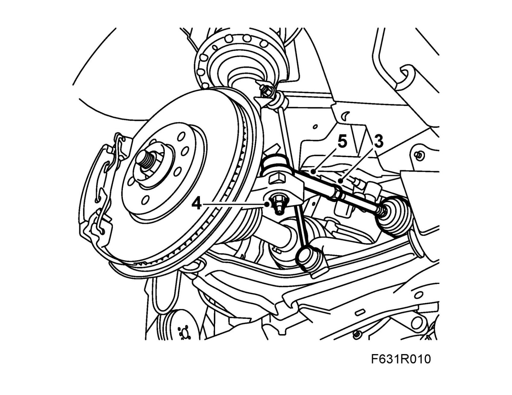
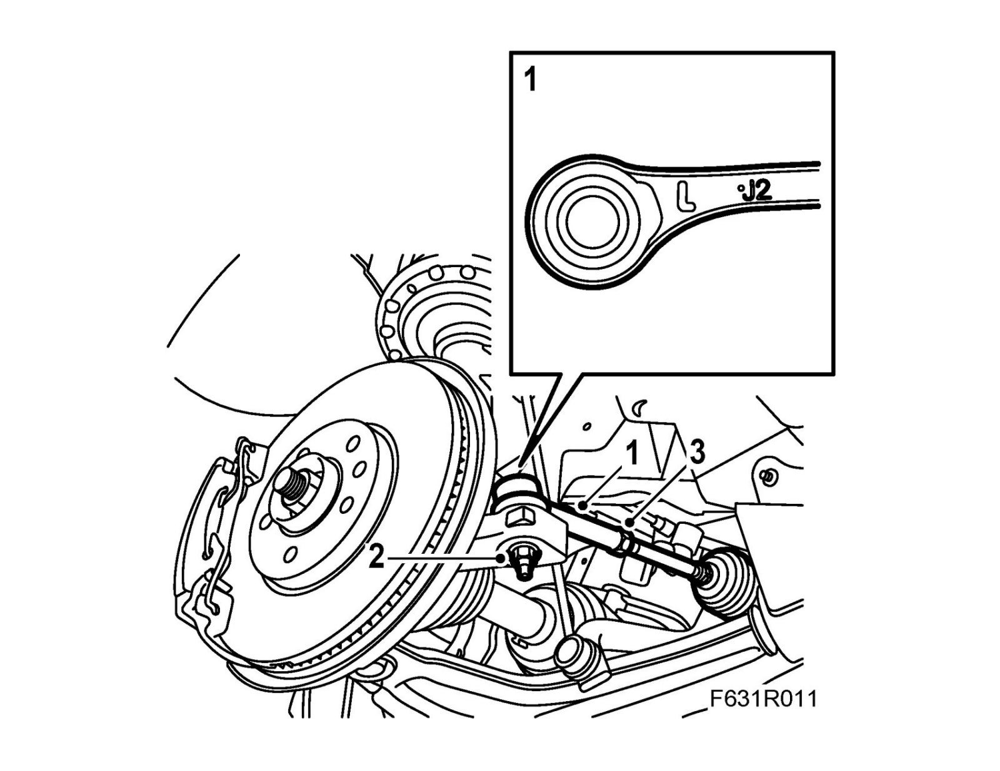

Tie Rod End: Service and Repair
Track rod endTo remove
1. Raise the car.
2. Remove the wheel.
3. Slacken the lock nut.

4. Remove the nut securing the track rod end to the steering swivel member.
5. Part the track rod end from the steering swivel member with 87 91 287 Puller, 150 mm.
6. Unscrew the track rod end from the track rod, counting the number of turns.
To fit
1. Screw on the track rod end the same number of turns as when it was removed.
Note
The left and right track-rod ends are different.
The track rod ends should curve slightly backwards when fitted. Markings: L = left-hand side, R = right-hand side.

2. Bolt the track rod end to the steering swivel member.
Tightening torque 35 Nm (26 lbf ft)
3. Tighten the track rod end's locknut.
Tightening torque 70 Nm (52 lbf ft)
4. Fit the wheel.
Tightening torque 110 Nm (81 lbf ft)
Lower the car to the floor.
5. Check the Toe-in angle using 88 19 013 Gauge, toe-in and adjust the toe-in angle as necessary.
6. Calibrate the steering wheel angle sensor.